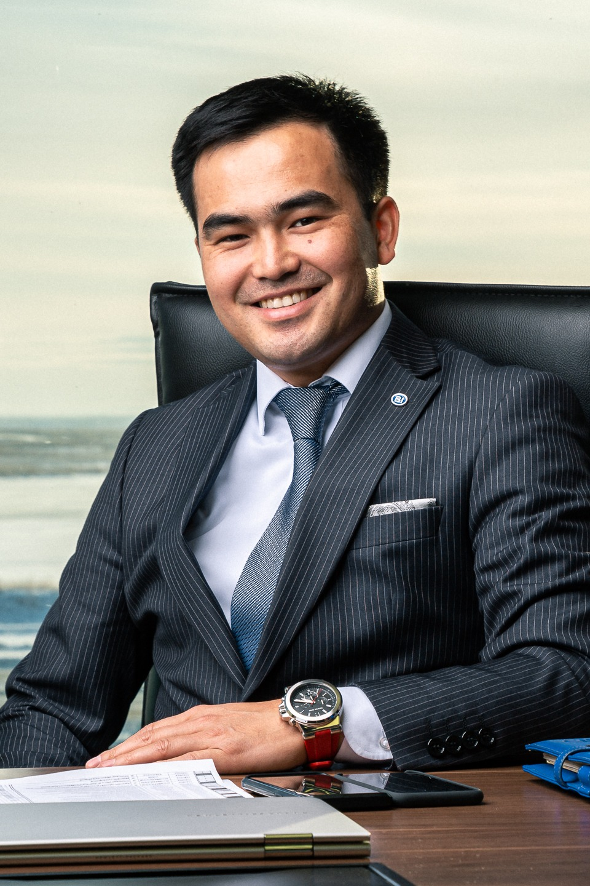
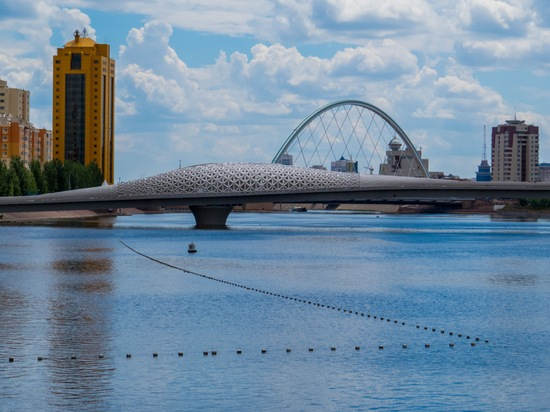
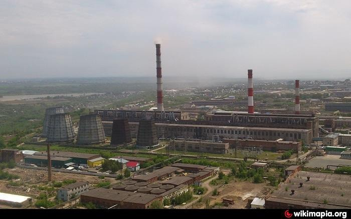
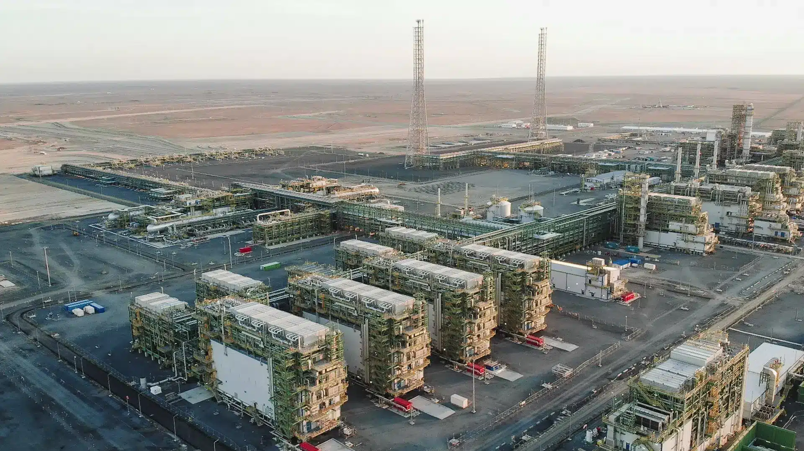
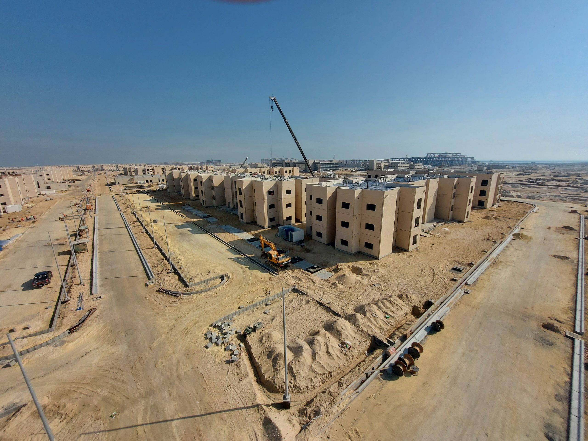
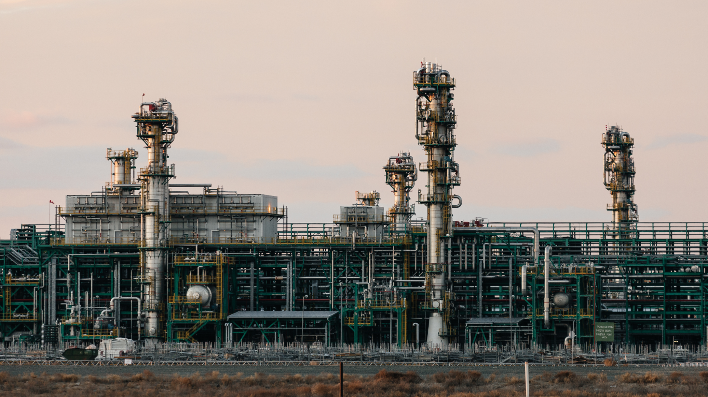
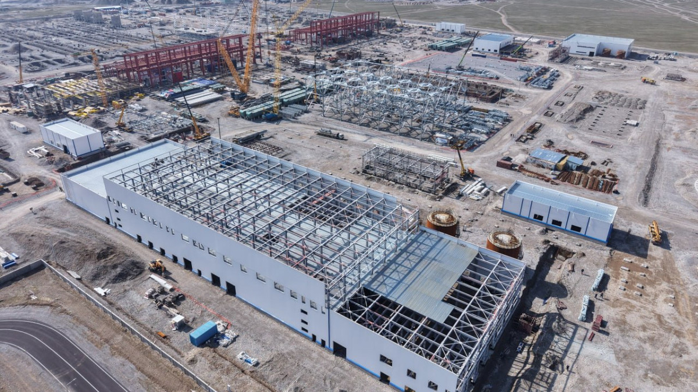
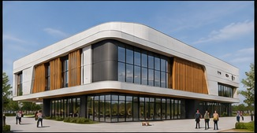
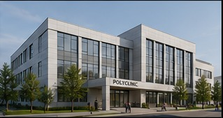

01 / 09
CONSTRUCTION / ENGINEERING
CAPITAL PARK
Residential development · Project leadership
Operations executive with 15+ years of experience in construction, digital transformation and large-scale project delivery.

I help organizations build efficient operations, implement digital solutions and deliver complex projects on time and within budget.
My approach combines strategic thinking, lean principles and advanced technologies to create sustainable value across construction and infrastructure.
Мы помогаем строительным компаниям повышать эффективность проектов, сокращать сроки строительства, оптимизировать затраты и выстраивать системное управление.
Наш опыт включает жилое и коммерческое строительство, промышленные объекты и проекты с международными заказчиками.

↗
↗
↗
↗



Мы рассматриваем строительный проект как единую систему, в которой связаны сроки, бюджет, рентабельность, качество, технологии и управление.
Наша задача — не просто выявить проблемы, а найти решения, которые дают конкретный экономический и операционный результат:
Reengineering construction systems through process discipline, digitalization, automation and measurable operating performance.
Strategic leadership. Operational excellence. Digital transformation.